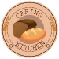
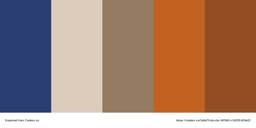

Site Name: Caring Kitchen
The domain will be CaringKitchen.com. The baker's name is Carin Gardner, so Caring Kitchen is a play on her name. The bread is hand made from scratch for each individual client.
Site Purpose: This is who I am
The goal of the site is to introduce people to the baker, advertise the variety of products available, and illustrate the process of making a loaf of bread.
Scenarios:
- What makes this bread better than store bought bread?
- How do I order the bread?
- What prompted the baker to start a home business?
- What are the ingredients?
- What kinds of bread are available?
Color Schema
The color palette was created at Coolors.com by uploading a picture that will be featured on the main page. Delft Blue and Dun will be the main font colors, the chamoisee, alloy orange, and russet colors will be used as accents and borders throughout the site.
Typography
I chose this font (Chilanka) because I wanted a welcoming font with a homespun quality for titles and headings.
I chose this font (Quicksand) because I wanted an open rounded font that paired well with the other font, but was easier to read in paragraphs and information.